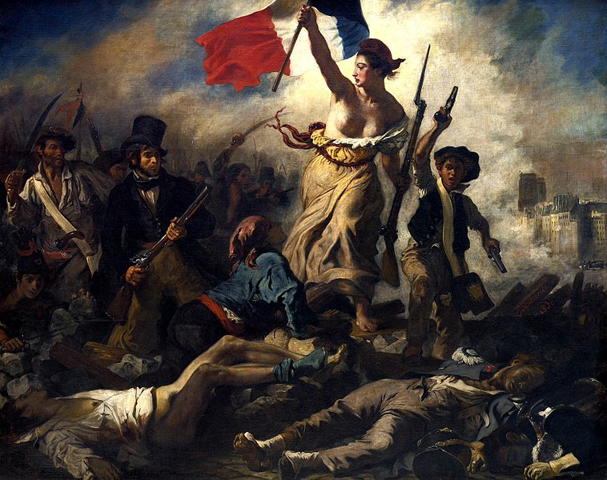
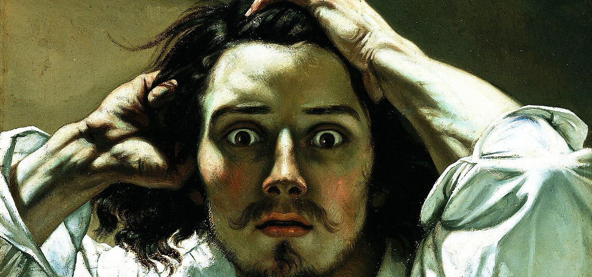
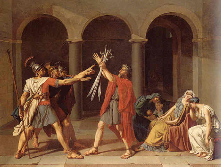
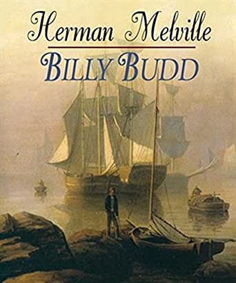

Movement
Romanticism is an artistic, literary, musical and intellectual movement of the 18th century. Known for it's emphasis on individualism, glorification of the past, of nature, and classical emphasis, it's birth was reationary to the aristocratic, social, and political norms during the Age of Enlightenment. With particular emphasis on intense emotion as a means to aesthetic experience, it elevated art, literature, and architecture, forever leaving an impact on Western cultures, influenxing liberalism, radicalism, conservatism, and nationalism.
Art
-

Liberty Leading The People
Created by Eugene Delacroix in 1830, this painting commemorates the July Revolution of 1830 which toppled King Charles the Tenth of France. Depicted, a woman - liberty, who is depicted as a robut goddess of the people - leads a varied group of people across various social classes pass the barricade of repression and the fallen bodies of those before them
-

The Desperate Man
An oil on canvas self-portrait of Gustave Courbet, The Desperate Man serves as a literal expression of the artists experiences, contrasting his known reputation and social image, this portrait reflected his attitude to "...know in order to do, that was my idea... To be in a position to translate the customs, the ideas, the appearance of my time, according to my own estimation; to be not only a painter, but a man as well; in short, to create living art"
-

The Oath of the Three Horatii
Painted by Jacques-Louis David in 1784, this painting stands in testament to the values of the Romanticism era. Showing a motionless portrait of men destined to death, yet maintaining honor, loyalty, and bravery, it reveals something deeper, more meaningful than depicted through a story or myth: emotion evoked beyond that expected of a beautiful image, emotion to the nature of man, their humanity in times of inhumanity
Literature
In literature, Romanticism found recurrent themes in the evocation or criticism of the past, the
cult of "sensibility" with
its emphasis on women and children, the isolation of the artist or narrator, and respect for nature.
Furthermore, several
romantic authors, such as Edgar Allan Poe and Nathaniel Hawthorne, based their writings on the
supernatural/occult and human
psychology. Romanticism tended to regard satire as something unworthy of serious attention, a
prejudice still influential today.
The Romantic movement in literature was preceded by the Enlightenment and succeeded by Realism.
Some authors cite 16th-century poet Isabella di Morra as an early precursor of Romantic literature.
Her lyrics covering
themes of isolation and loneliness, which reflected the tragic events of her life, are considered
"an impressive prefigurement
of Romanticism",[43] differing from the Petrarchist fashion of the time based on the philosophy of
love.
-

American Romanticism Literature
Considered for its highly positive depiction of American Romanticism, the novel Billy Bud iconicized the spirit of the movement through its allegorical old-age conflict between Enlightment philosophies, characterized through the "evil" antagonist of the novel, and Romantic philosophies, characterized through the protagonist of the novel.
Architecture
Romantic architecture appeared in the late 18th century in a reaction against the rigid forms of neoclassical architecture. Romantic architecture reached its peak in the mid-19th century, and continued to appear until the end of the 19th century. It was designed to evoke an emotional reaction, either respect for tradition or nostalgia for a bucolic past. It was frequently inspired by the architecture of the Middle Ages, especially Gothic architecture, It was strongly influenced by romanticism in literature, particularly the historical novels of Victor Hugo and Walter Scott. It sometimes moved into the domain of eclecticism, with features assembled from different historic periods and regions of the world.